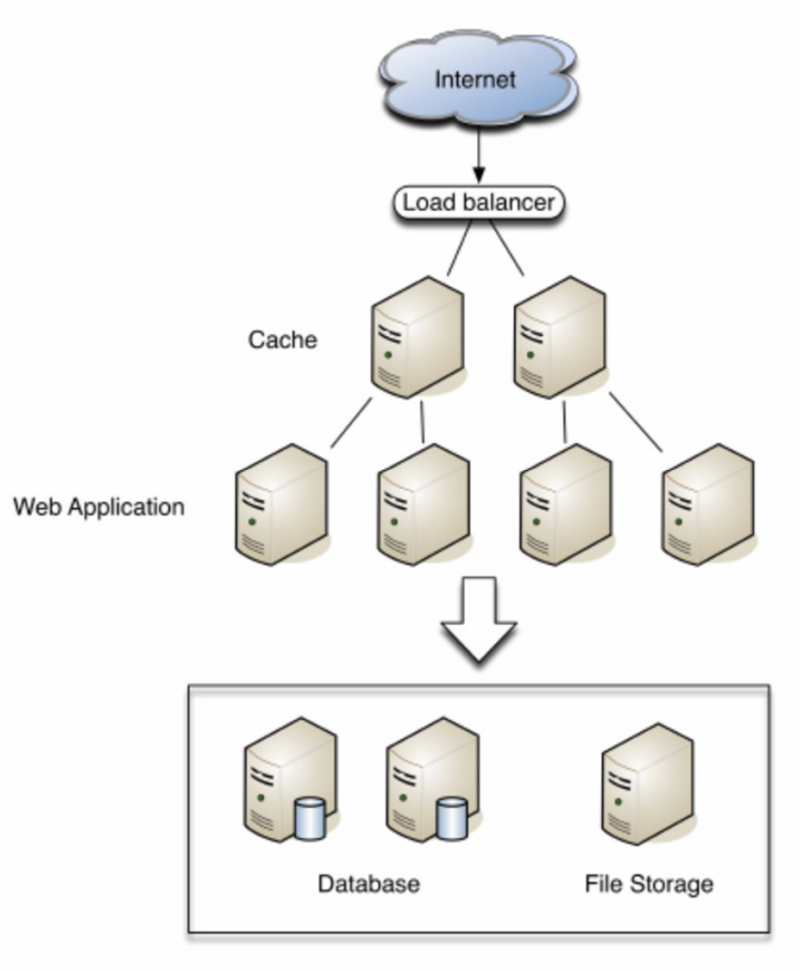

Server vs Klient
I detta inlägg ska vi reda ut skillnaden på Server och Klient. Vi ska fördjupa oss i datorhallar som innehåller servrar och vi ska gå in på molnets tjänster. Här kommer du också kunna läsa om operativsystem.En server betjänar klienten (värden) och varjedator betraktas som en värd. Se det som att du sitter vid datorn och nätshoppar, då betjänar servern dig och din dator. Genom varje klick du gör skickas en förfrågan från din dator till en server på Internet som besvarar din förfrågan. Din dator har en Ip-adress och den gör att servern som förfrågan har skickats till hittar rätt mottagare. Det finns miljontals servrar som pratar med varandra genom siffror och koder. Klient är din internetuppkopplade dator.
 Det finns miljontals sevrar och dem hushåller oftast i datorhallar, eller serverhallar, som finns runt om i världen. I Sverige finns flera datorhallar, Facebook har bland annat en serverhall i Luleå som servar mer än 800 miljoner Facebook-användare. År 2022 fanns det nio miljoner serverhallar i världen och dem stod tillsammans för 3% av världens energianvändning. Ni kan ju tänka er hur varmt det blir i detta hallar. Det är just därför Sverige är ett populärt land att bygga datorhallar i, eftersom vi är ett kallt land. Det har skett en del utveckling när det kommer till att hitta en stabilare energieffekt.
Microsoft gjorde ett test år 2018 att sänka ner en tank innehållande 864 servar i havet utanför den Skotska kusten. Enligt Microsoft var testet en succé, datorhallen fick en naturlig kyla och hade bara haft en åttondel av problem som en datorhall på land haft under samma tid. Det är inte bara att besöka en datorhall. Det finns nästan alltid en elgrind runt området, en grindvakt, SOC (Security Operation Center) dvs övervakning. Du har också ett id-kort, man behöver oftast logga sitt id-kort varje gång du passerar en dörr, en del har till och med slussar. Det finns också Dispose Central där de som skall slängas hamnar. Här krossas de och blir usb-minnen m.m. Det finns också många gömda datorhallar.
Molnet
Är en samling servrar och datacenters över världen som vi lagrar data på. Lättare sagt, en digital lagringsenhet som du förvarar dina filer i.
Se det som att du använder dig av google Drive, då hittar du dina dokument från vilken enhet som helst så länge du har internet.
Det finns tre varianter av molnet:
Public: molnet för allmänheten
Private: Dina on-preem-sevrar (tillgängliga för anställda online)
Hybrid: En mix av public och private.
Det är vanligt att företag använder sig av molnet, för att underlätta arbetet i sin verksamhet.
Som företag kan du välja att lägga allt i molnet eller en del, det handlar främst om hur mycket kontroll du vill ha över dina tjänster.
Företaget betalar bara för den kapacitet som används och man kan skala upp och ner tjänsten efter behov.
Molnföretag ger en trygghet då de ofta besitter specialkompetens inom säkerhet och bra IT-resurser. Molntjänster byter ut och uppdaterar mjuk och hårdvaran regelbundet.
I inlägget "Cyberattack mot Nordic Choice" pratar jag om företaget Iver, som levererar molnbaserade It-tjänster, stod bredvid Hotellet under attacken.
Nordic Choice berrättar under en konferans hur tacksamma de var över att ha den här typen av tjänsten, som hade specialister och ett färdigt upplägg för sånt här.
Man brukar prata om tre huvudtyper av molntjänster:
- Iaas - Infrastructure as a server: lägsta nivån av molnet. Enkelt sagt så köper företaget en server med vissa fördefinerade egenskaper.
- Paas - platform as a service: programvara och data hanteras av dig som företag men operativsystemet underhålls av molntjänsten, så du behöver inte fundera på uppdateringar osv. Här kan man enkelt säga att du köper färdiga byggstenar att bygga med som du själv kan utveckla. Ofta använder sig utvecklare av denna tjänst.
- Saas - Software as a Service: Du köper en färdig tjänst, molntjänsten är ansvarig allt som sker, dvs från server till uppdateringar och datahantering. Du köper ett färdigt program som är redo att användas.
IaasS: du beställer hem ett pizzakit
Paas: Du beställer hemleverans
SaaS: Du äter på resturang.
On Preem: Du lagar pizzan hemma från grunden.